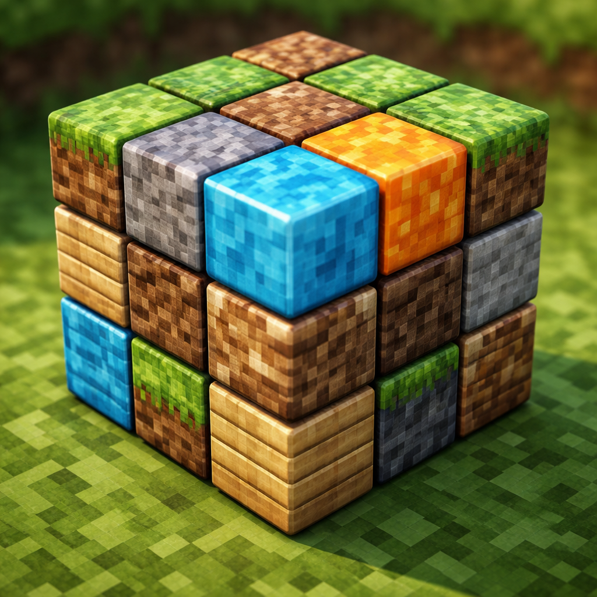

Hier mein Beitrag zur digitalen Ausstellung: Der Rubik-Würfel des 21. Jahrhunderts - digital trifft analog. #rubikscube #zauberwürfel

Wir sind im Begriff unsere alte Seite dynamischer und partizipativer zu gestalten.
Bis zur Eröffnung der Ausstellung sind diese interaktiven Funktionen allerdings unseren Mäzenen vorbehalten.
Sollten Sie zu unseren werten Mäzenen gehören, so haben Sie in den vergangenen Wochen einen Brief mit ihren Zugangsdaten erhalten.
Wir wünschen Ihnen viel Spaß!
Hier mein Beitrag zur digitalen Ausstellung: Der Rubik-Würfel des 21. Jahrhunderts - digital trifft analog. #rubikscube #zauberwürfel
